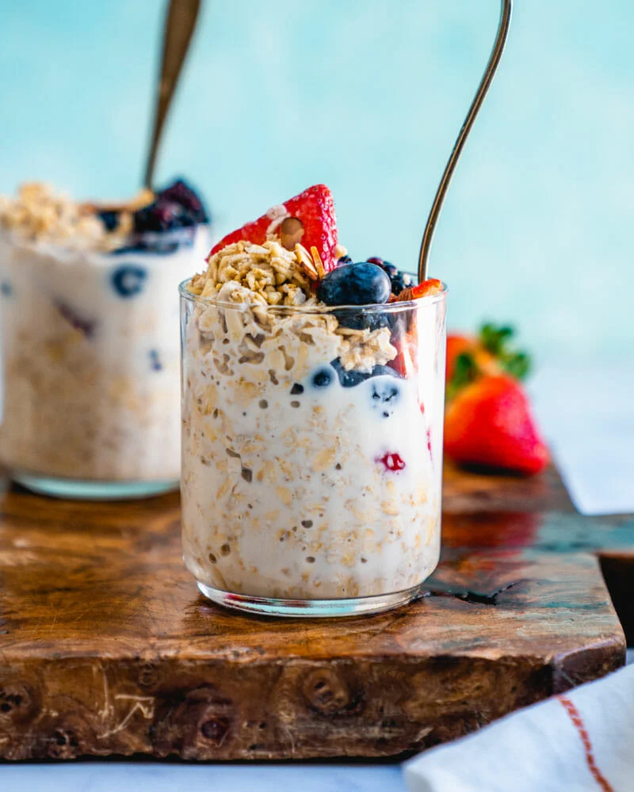

Overnight Oatmeal

Overnight oats are raw rolled oats that are combined with a liquid—most frequently
milk, alternative milks like almond or coconut milk, or yogurt. They're seasoned,
sweetened, and mixed well, then left to soften in the fridge overnight.
Ingredients
- ⅓ cup milk
- ¼ cup Greek yogurt
- ¼ cup rolled oats
- 2 teaspoons honey
- 2 teaspoons chia seeds
- 1 teaspoon ground cinnamon
- ¼ cup fresh blueberries
Steps
-
Combine milk, yogurt, oats, honey, chia seeds, and cinnamon in a 1/2-pint jar with
a lid; cover and shake until combined. Fold in blueberries.
- Cover and refrigerate, 8 hours to overnight.
Go back